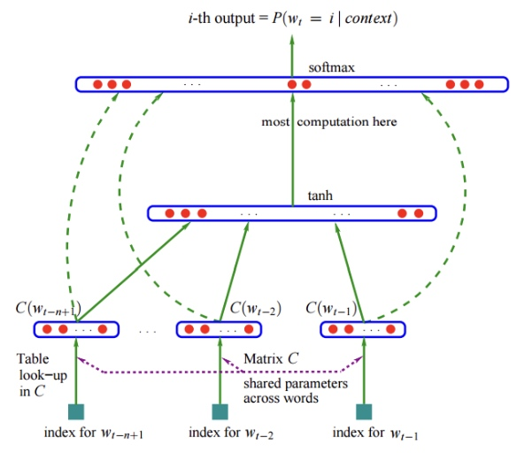
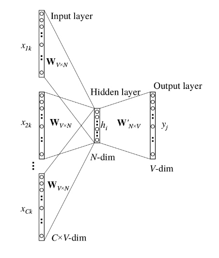
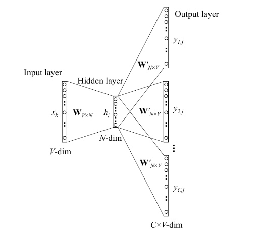

1 one-hot向量
- 每个词用一个长度为词典大小的向量表示，该词的索引处为1，其余均为0；
- 相同的词距离为0，其余情况距离均为1；
- 若词典较大，则one-hot是一个高维稀疏向量。
2 N-gram语言模型
2.1 定义
根据给定词序列，限定当前词的概率值依赖于之前N-1个词，给出该序列定义如下：
\( \begin{align} P(w) = \prod ^K _{k = 1} P(w_k | w_{k - 1}, ... , w_{k - N + 1}) \tag {1} \end{align}\)
并用困惑度Perplexity描述语言模型的好坏：
\( \begin{align*} H &= -\lim _{k \to \infty} \frac {1} {K} \log_2 P(w_1, ..., w_k) \\ & \approx \frac {1} {K} \sum ^K _{k = 1} \log _2 P(w_k | w_{k - 1}, ... , w_{k - N + 1}) \tag {2} \end{align*}\)
2.2 问题
1. 数据的稀疏性：若多个单词没有在训练数据中一起出现过，则概率为0，然而并不代表其构成不合理。
改进：采用数据平滑的方式，通过打折（概率分配）或回退（(N-1)-gram)来改进最大似然估计。
2. N不能太大，否则N-gram存储得过多，很难考虑长距离的依赖。
改进：RNN/LSTM/GRU
3. 泛化能力差
3 神经网络语言模型

look-up table等价于将one-hot向量与一个神经网络可学习的Embedding矩阵相乘。
缺陷：训练较慢。
4 Word2Vec
4.1 假设
若两个词的上下文相似，这两个词的语义就相似。
基于统计方法获得词向量。
4.2 CBoW
用一个词的上下文来预测这个词。

两个全连接构成，W和W'为可学习参数矩阵。
4.3 Skip-Gram
用一个词来预测他的上下文。
